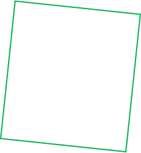
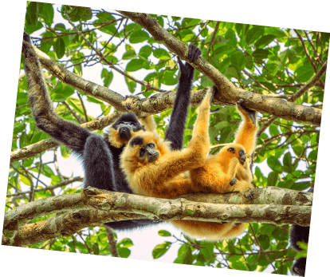
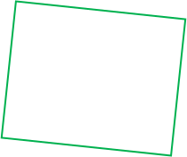
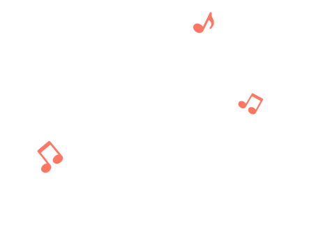
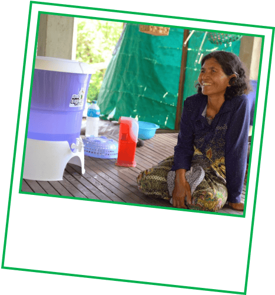
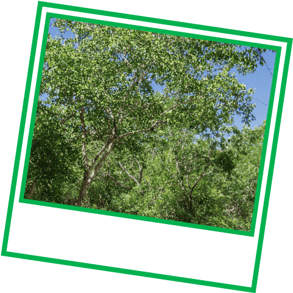
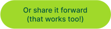

Got 2 minutes?
Swipe for some surprising facts (and how you're helping).
Every 100៛ from your
Grab ride or order goes towards projects that help Mother Nature.
Here's what happens when you opt in to our Green Programme:
Turn your small change into big changes for the planet

Sadly, deforestation is ending this jungle karaoke. Your support
can help us protect these gibbons and more animals at
Keo Seima Wildlife Sanctuary.
And it’s not just about animals. Protecting this forest also
helps store millions of tonnes of CO₂.
A win for wildlife and the world.
Did you know?
Yellow-cheeked gibbons sing songs that can be heard up to 1km away




©Filip Agoo/Everland
Over 60 endangered species
live at Keo Seima, including the
Asian Elephant.
Source:
“Southern Yellow-Cheeked Crested Gibbon, Nomascus gabriellae.” New England Primate Conservancy.
Many rural communities in Cambodia still burn wood to make water
safe. Your support for
Hydrologic’s Ceramic Water Filter Project
helps change that.
It’s a simple solution, but it helps
save 18,000 tons of wood
and
cuts 41,000 tonnes of CO₂ emissions
each year.
Did you know?
Boiling water literally burns the planet

They provide affordable filters to
give 30L of clean water a day. No
boiling needed!
Can you guess how many trees have been contributed so far?
Goes to show how small change can grow into something big, huh? Tap
here to opt in to
Green Programme,
if you haven't yet.
Quick quiz.
Since 2021, Grab users like you have been championing forest
conservation across Southeast Asia.


1.2 million trees